Étudiant en informatique, orienté développement web et projets concrets.
À propos
À propos
Actuellement étudiant en BTS SIO SLAM, je consolide mes compétences en programmation, intégration web et développement d'applications. J'apprécie particulièrement les projets où il faut transformer un besoin concret en interface claire, fonctionnelle et maintenable.
Mon objectif est de progresser dans le développement web et applicatif en continuant à travailler sur des projets réels, à renforcer mes bases techniques et à gagner en autonomie dans un contexte professionnel.
Compétences
Compétences techniques
Technologies principales que j'utilise dans mes projets et en formation.
HTML
CSS
JavaScript
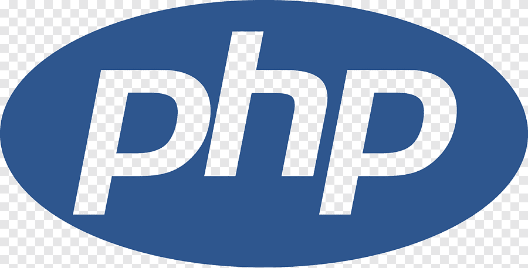
PHP
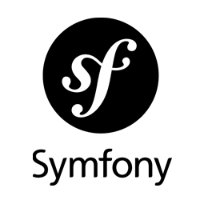
Symfony
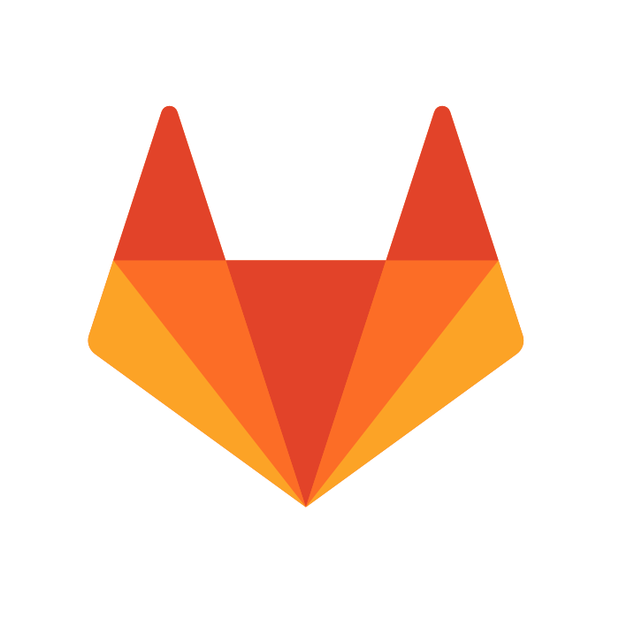
GitLab
Stack complémentaire
SQL
React
Django
Expo
Git
Docker
VS Code
Soft skills
Communication
Organisation
Esprit d'équipe
Autonomie
Parcours
Baccalauréat technologique STMG
—
Obtention du baccalauréat technologique STMG, avec consolidation des bases en gestion, communication et organisation de projet.
BTS SIO SLAM — IPSSI Paris
—
Développement web, bases de données, projets applicatifs, sécurité.
Stage — AfroCaribe
—
Développement front-end, amélioration UI/UX et bases techniques pour les projets numériques.
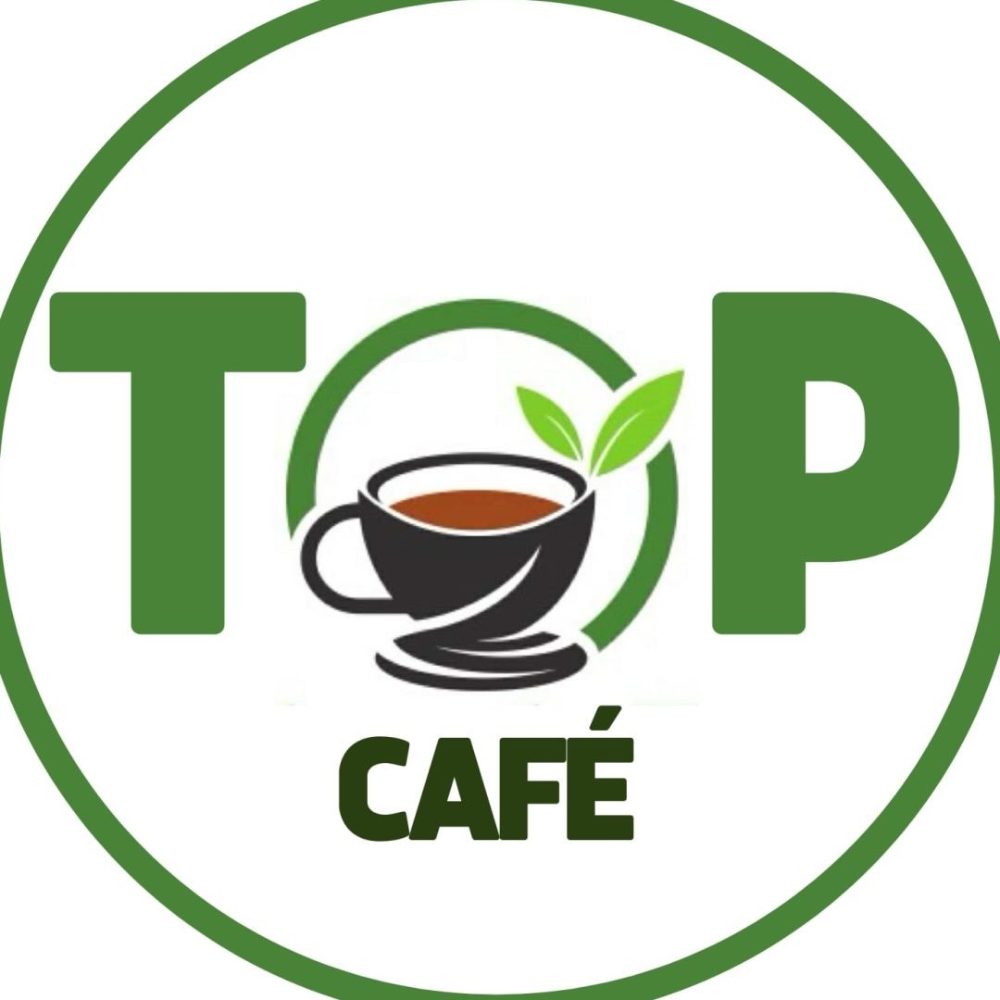
Stage — Site vitrine restaurant filipino
—
Conception et développement d'un site vitrine pour présenter un restaurant filipino : identité visuelle, menus, informations pratiques et contact.
Projets
Cette section présente une sélection de projets réalisés en autonomie ou dans le cadre de ma formation.
Mini Quiz personnalise sur les armes
— S1
Mini quiz réalisé en HTML, CSS et un peu de JavaScript, avec des questions personnalisées sur le thème des armes et un affichage du score final.
Application Google Books
— S4
Développement d'une application web permettant la recherche de livres via l'API Google Books et la gestion d'une bibliothèque personnelle.
Portfolio BTS SIO SLAM
— S4
Portfolio personnel one-page pour présenter mon profil, mes projets, mon parcours et mon expérience de stage.
Devoir Pokedex
— S4
Mini-projet JavaScript connecté à la PokeAPI avec recherche, filtrage et affichage détaillé des créatures dans une interface type Pokedex.
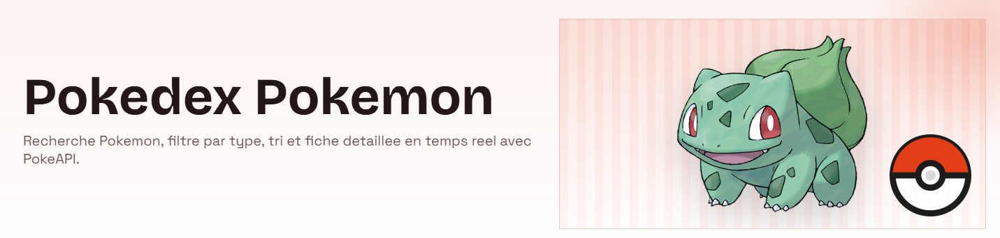
Devoir Music
— S4
Mini-projet de front-end autour d'un univers musical, avec mise en page, interaction utilisateur et organisation des contenus pour une presentation claire.
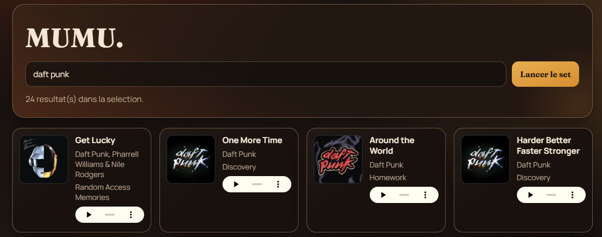
API simple de notes
— S3
API REST pour gérer des notes d'étudiants avec des opérations CRUD et une base de données relationnelle.
Gestionnaire de tâches
— S2
Application web permettant d'ajouter, filtrer et suivre des tâches selon leur avancement.
AP1 Ascolia
— S1
Conception et réalisation d'un site vitrine de présentation pour une entreprise fictive et virtuelle. Projet de mise en pratique des compétences web initiales.
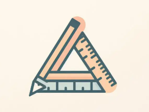
AP2 FOOT local
— S4
Application web de gestion de clubs de football avec backend Symfony API REST, authentification JWT et interface React. Gestion des clubs, joueurs, matchs, tournois et favoris utilisateurs.
Veille technologique
Contact
Je suis disponible pour échanger autour d'un stage, d'une alternance ou d'un projet de développement. Tu peux me contacter directement par email ou consulter mes dépôts sur GitHub.
AfroCaribe avait besoin de développer et améliorer ses pages web, d’optimiser son interface utilisateur et de poser des bases techniques solides pour ses futurs projets numériques. Mon stage s’inscrivait donc dans une démarche à la fois technique, créative et autonome, en lien direct avec les besoins réels de l’entreprise.
Missions réalisées
Mission 1 : Développement et amélioration de pages web. Mise en place de la structure des pages, amélioration de l’ergonomie et de la lisibilité, optimisation de l’affichage sur desktop et mobile pour des pages claires et modernes.
Mission 2 : Conception du design et de l’interface utilisateur. Choix des couleurs, hiérarchie des contenus et navigation (menus, sections, boutons) pour transformer des idées en interfaces concrètes et centrées UX.
Mission 3 : Travail en autonomie et gestion du code. Réalisation complète de certaines tâches jusqu’à la mise en ligne et utilisation de GitLab pour gérer le code source et suivre les modifications.
Site réalisé pendant le stage
J'ai participé à la réalisation et aux améliorations du site AfroCaribe.
Pendant le stage, j'avais des reunions a distance tous les jours a 18h pour faire le point, valider les priorites et ajuster les evolutions du site.
Reunion de suivi (1)Reunion de suivi (2)Echanges Gmail
Résultats & Apprentissages
Ce stage m’a permis de consolider mes compétences en développement front-end, de mieux comprendre la conception d’un projet web de A à Z, de travailler de manière autonome et organisée, de découvrir des outils professionnels comme GitLab et Symfony, et d’améliorer ma sensibilité au design et à l’expérience utilisateur. Mon travail a contribué à améliorer la qualité et la cohérence des pages web d’AfroCaribe.
Document KBIS — Les Pages Antillaises
Le KBIS des Pages Antillaises est disponible en PDF pour compléter la partie administrative du stage 1.
L'objectif du stage était de créer un site vitrine clair et moderne pour valoriser l'identité d'un restaurant filipino, faciliter la découverte de la carte, afficher les informations utiles (horaires, localisation, contact) et donner une image plus professionnelle de l'établissement.
Création du site (étapes réalisées)
Cadrage du besoin : identification des pages importantes (accueil, menu, a propos, contact) et des informations prioritaires pour les visiteurs.
Structure et maquettes : organisation de la navigation, hiérarchie visuelle des contenus et création d'une base responsive pour mobile et desktop.
Intégration front-end : implémentation HTML/CSS/JavaScript des sections, composants et interactions utiles (navigation, boutons, mise en avant des plats).
Mise en valeur du contenu : preparation des emplacements photos, textes descriptifs et blocs de presentation pour remplacer facilement les contenus definitifs.
Finalisation : ajustements d'ergonomie, cohérence visuelle et tests d'affichage pour obtenir un rendu propre et lisible.
Technologies utilisees
HTMLCSSJavaScript
Maquette Figma & Charte graphique
Extrait de la maquette réalisée sur Figma en début de développement, avec la charte graphique du site (palette de couleurs, logo, typographie et structure des sections).
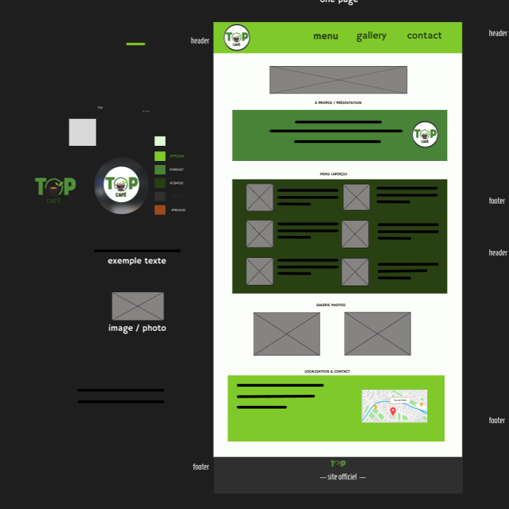
Maquette one-page & charte graphique — conçue sur Figma avant l'intégration
Illustrations du site
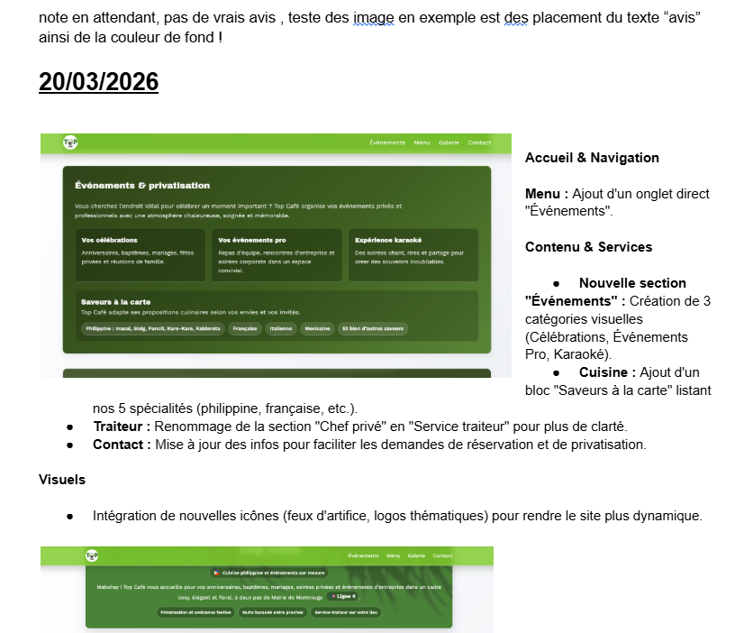
Hero / facade ou ambiance
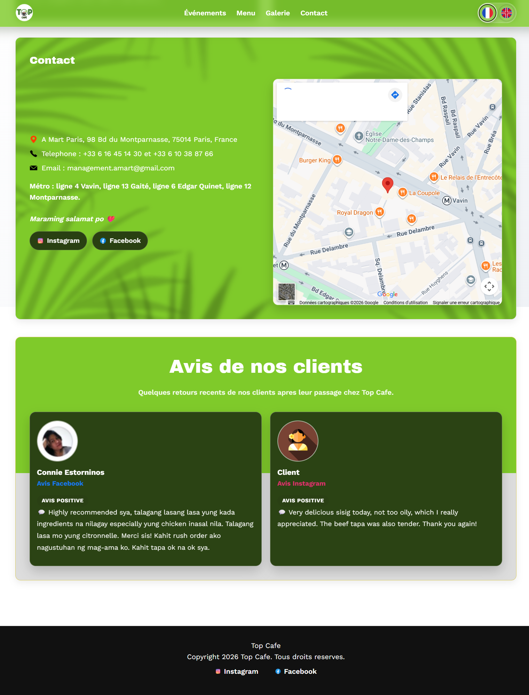
Specialites / plats
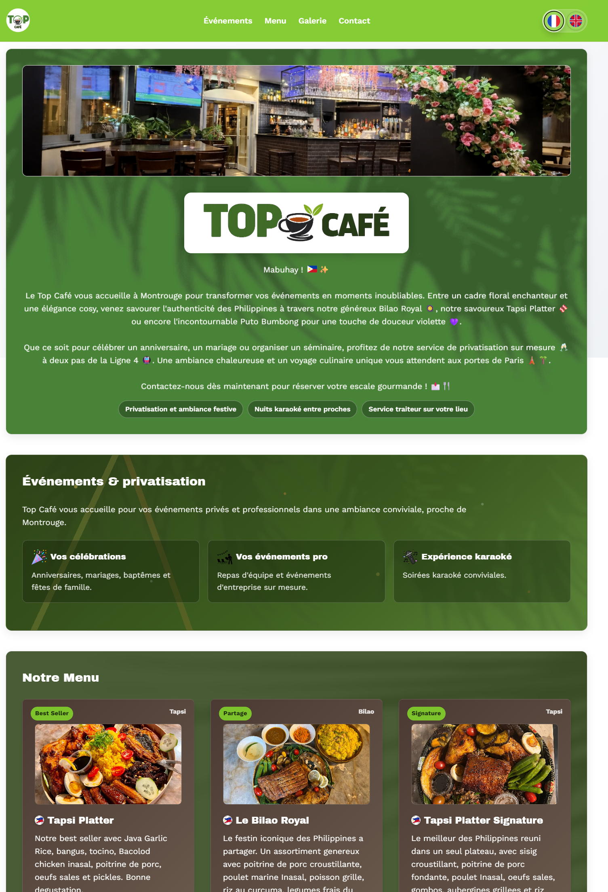
Page menu
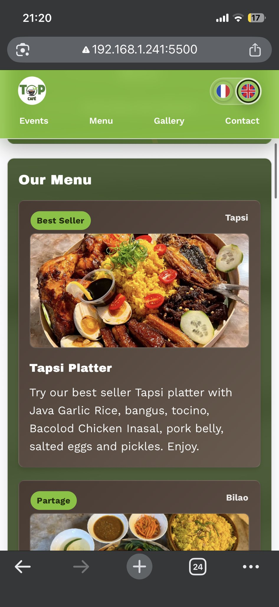
Section a propos
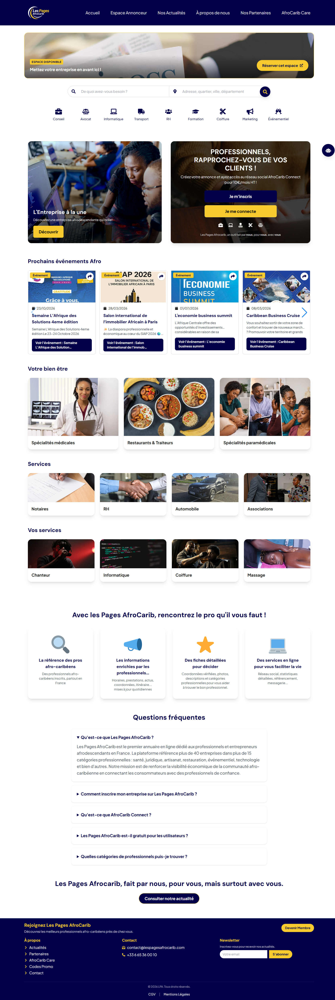
Contact et localisation
Suivi de projet — Document collaboratif
Tout au long du stage, j'ai tenu a jour un document Google Doc partage avec ma responsable. Elle pouvait le consulter a tout moment et on faisait des points reguliers pour ajuster ou valider les avancees.
Ce stage m'a permis de travailler sur un besoin concret de communication digitale, de structurer un site vitrine complet, d'améliorer ma logique d'intégration et de renforcer mon autonomie sur l'ensemble du cycle de création d'une page web.
Veille technologique 2024 - Chien robotique
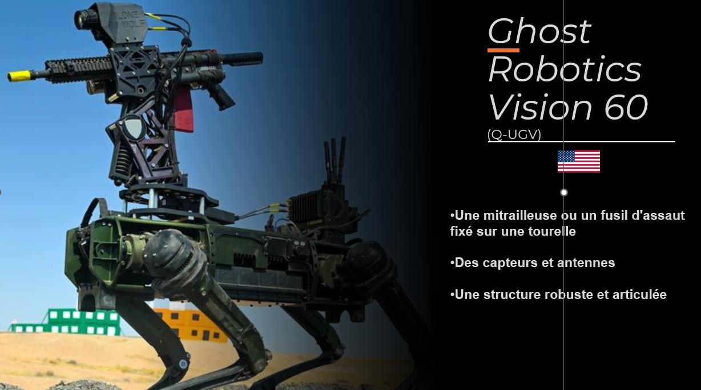
Vue d'ensemble des chiens-robots
Présentation
Depuis plusieurs années, les progrès en robotique ont permis la création de robots quadrupèdes appelés chiens-robots. À l'origine, ces machines étaient conçues pour des usages civils comme l'exploration, l'inspection industrielle ou les missions de secours.
Contexte et acteurs
Une entreprise connue dans ce domaine est Boston Dynamics, qui a développé des robots comme Spot ou Atlas. Grâce à leur agilité et leur capacité à se déplacer sur des terrains difficiles, ces robots ont rapidement attiré l'intérêt des armées.
Acteurs et cas d'usage du secteur
Usages militaires
Aujourd'hui, certains chiens-robots sont utilisés pour des missions militaires comme la reconnaissance, la surveillance de bases ou la patrouille. Certains modèles peuvent même être équipés de capteurs avancés ou d'armes, comme le robot Vision 60 développé par Ghost Robotics.
Limites et enjeux
Cependant, leur utilisation soulève plusieurs questions importantes : les risques de piratage, les décisions prises par l'intelligence artificielle, et les débats éthiques sur l'utilisation d'armes autonomes.
Illustrations
Chien robotique utilisé comme illustration de veilleExemple visuel complémentaireIllustration des usages et débats
Conclusion
Pour conclure, les chiens-robots font déjà partie des nouvelles technologies militaires, mais leur développement pose des questions importantes sur l'avenir de la guerre et sur les limites à fixer à ces technologies.
Projet de quiz interactif réalisé en 2024 pour travailler les bases du développement front-end. Le quiz propose des questions personnalisées sur les armes avec navigation entre les questions et résultat final.
Contributions principales
Creation de la structure HTML du quiz
Mise en forme CSS de l'interface
Logique JavaScript pour gerer les questions et le score
Technologies
HTMLCSSJavaScript
Illustrations
Ecran principal avec lancement du quiz
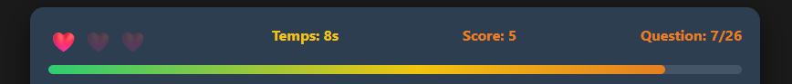
Gestion des vies pendant les questions
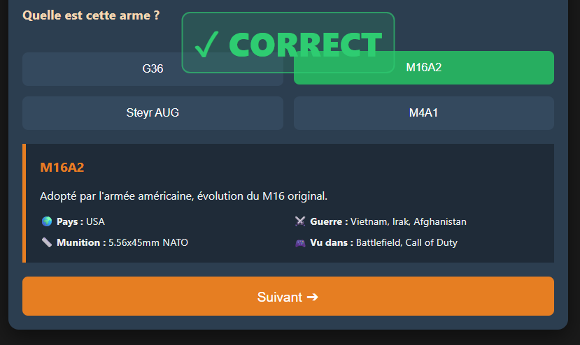
Affichage du resultat final en cas de reussite
Application Google Books
— Devoir de formation (S4)
Description
Développement d'une application web permettant la recherche de livres via l'API Google Books et la gestion d'une bibliothèque personnelle.
Contributions principales
Connexion et consommation de l'API Google Books
Mise en place de la recherche et du filtrage des résultats
Gestion d'une bibliothèque personnelle côté client
Technologies
JavaScriptGoogle Books APIGestion des cles API (.env)Filtrage des donnees
Résultats
Maitrise des appels API en JavaScript
Bonne pratique de gestion des cles via environnement .env
Interface exploitable pour demontrer la logique metier
Captures
Couverture du projetEcran de recherche et filtrageAffichage des résultatsCarte detaillee d'un livre
Portfolio BTS SIO SLAM
— Projet personnel (S4)
Description
Portfolio personnel one-page pour presenter mon profil, mes projets, mon parcours et mon experience de stage.
Mini-projet JavaScript connecté à la PokeAPI pour rechercher des Pokemon, filtrer les résultats et afficher leurs informations principales (nom, visuel, caractéristiques) dans une interface type Pokedex.
Contributions principales
Connexion a l'API Pokemon
Affichage dynamique des fiches
Recherche et navigation dans les donnees
Technologies
HTMLCSSJavaScriptPokeAPI
Résultats
Consolidation des appels API
Meilleure maitrise du DOM en JavaScript
Projet facilement montrable en demonstration
Illustrations du projet
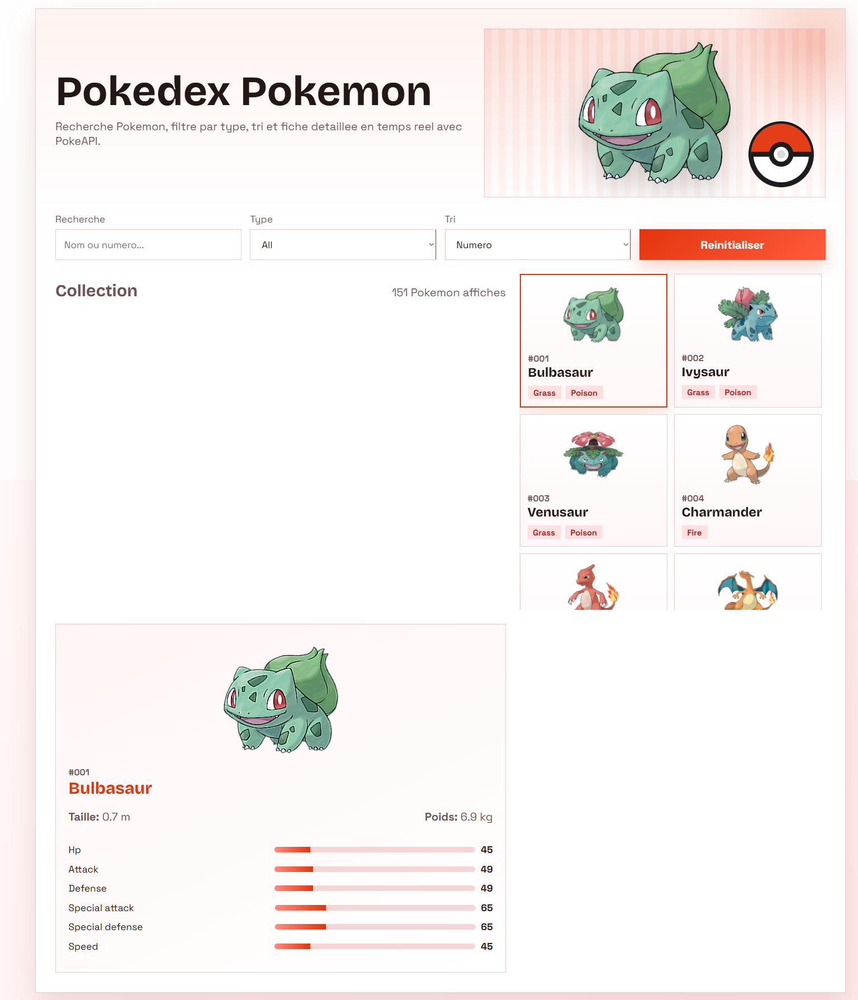
Vue generale du Pokedex
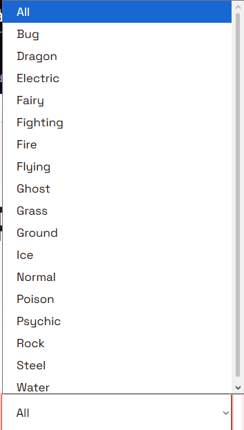
Filtrage des Pokemon
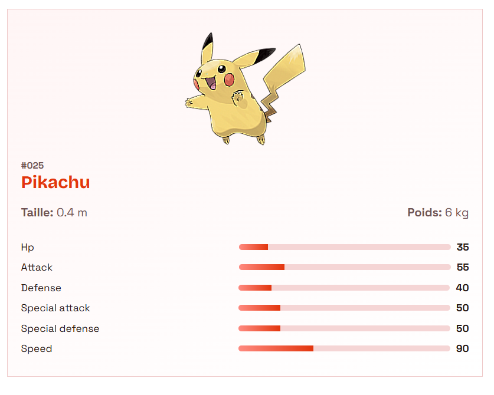
Fiche Pokemon detailleeFiltrage complet
Devoir Music
— Projet de formation (S4)
Description
Mini-projet de front-end autour d'un univers musical, avec mise en page, interaction utilisateur et organisation des contenus pour une presentation claire.
Contributions principales
Integration de l'interface
Structuration des sections
Ajout des interactions JavaScript
Technologies
HTMLCSSJavaScript
Résultats
Travail sur le responsive
Meilleure organisation du code front-end
Projet presentable dans le portfolio
Illustrations
Couverture du projetCarte musicaleInterface du projet
API simple de notes
— Projet de formation (S3)
Description
API REST pour gérer des notes d'étudiants avec des opérations CRUD et une base de données relationnelle.
Contributions principales
Modelisation des donnees
Implementation des routes
Documentation de base
Technologies
PHPSQL
Résultats
Premiere API fonctionnelle
Mise en pratique du CRUD
Travail sur la structure backend
Gestionnaire de tâches
— Projet de formation (S2)
Description
Application web permettant d'ajouter, filtrer et suivre des tâches selon leur avancement.
Contributions principales
Structure de l'interface
Logique de filtrage
Tests fonctionnels
Technologies
HTMLCSSJavaScript
Résultats
Manipulation du DOM
Gestion d'etat cote client
Interface plus lisible et responsive
AP1 Ascolia
— Projet de formation (S1)
Description
Conception et réalisation d'un site vitrine de présentation pour une entreprise fictive et virtuelle. Ce projet a permis de mettre en pratique les compétences web initiales acquises lors de la première période de formation.
Contributions principales
Design et maquette du site vitrine
Développement de la structure HTML
Mise en forme et styles CSS
Optimisation de la presentabilite
Technologies
HTMLCSS
Résultats
Site vitrine fonctionnel et responsive
Design coherent et professionnel
Base solide pour les projets suivants
Illustrations
Logo d'Ascolia
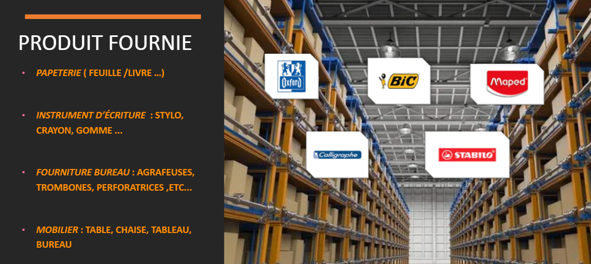
Page produit
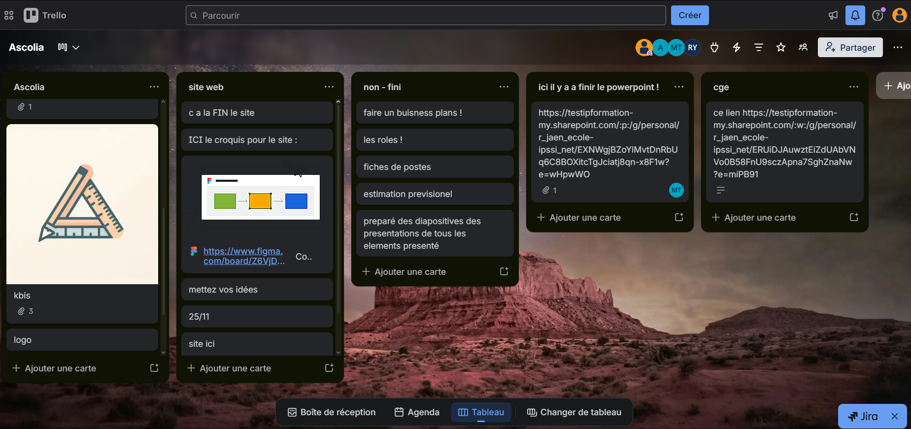
Tableau de projet Trello
AP2 FOOT local
— Projet de formation (S4)
Description
Application web de gestion de clubs de football avec une architecture complète separation backend/frontend. Permet de gerer l'ensemble de l'ecosysteme d'un club sportif avec des features avancees d'authentification et de gestion d'utilisateurs.
Fonctionnalites
Gestion des clubs et equipes
Gestion des joueurs et profils
Planification et résultats des matchs
Gestion des tournois
Systeme de favoris utilisateurs
Authentification JWT securisee
Stack technique
SymfonyAPI RESTReactJWTPHPJavaScript
Contributions principales
Architecture et conception de l'API REST
Authentification et securite JWT
Interface React responsive
Gestion des donnees et base de donnees
Integration backend/frontend
Illustrations
Logo du projetVue generale de l'applicationMaquette de l'interfaceRequetes API RESTEcran de connexion adminTableau de bord administrateurGestion des clubsGestion des tournoisModule Coupe localeTableau de projet Trello
Sécurité numérique et protection des données — Veille 2025
Vue d'ensemble des arnaques téléphoniques
Contexte
Le harcèlement téléphonique et les tentatives d'escroquerie (smishing, vishing) sont en constante évolution. Cette veille porte sur les mécanismes techniques utilisés par les fraudeurs et les solutions déployées pour les contrer.
Le Spoofing : usurpation de numéro
Les fraudeurs utilisent des serveurs VoIP pour masquer leur identité et afficher un numéro local ou celui d'une banque. Cela rend les listes noires classiques (comme Bloctel) partiellement inefficaces, car le numéro change constamment.
Exemples concrets de fraudes et d'usurpation
Méthodes d'arnaque identifiées
Ping Call — Appels courts pour inciter à rappeler un numéro surtaxé
SMS Amendes/Colis — Faux sites de paiement pour voler des coordonnées bancaires
Arnaque CPF/Rénovation — Exploitation de bases de données fuitées pour cibler les victimes
Clonage de voix par IA — Un simple « Allô » suffit pour capturer et reproduire une voix. Les fraudeurs appellent ensuite les proches en se faisant passer pour la victime afin d'extorquer de l'argent en urgence.
Focus : l'arnaque au clonage de voix
Grâce aux outils d'IA générative, quelques secondes d'enregistrement audio suffisent pour cloner une voix de manière convaincante. Le fraudeur appelle un proche en imitant la voix de la victime, prétextant une urgence (accident, arrestation, perte de portefeuille) pour réclamer un virement immédiat. La technique se démocratise et touche désormais le grand public.
Comment se protéger ? Convenir d'un mot de passe familial à utiliser en cas de doute, ne jamais effectuer de virement sous pression, et rappeler le proche sur son numéro habituel pour vérifier.
Solutions technologiques & réglementaires
Loi Naegelen (France) — Interdit l'usage de numéros mobiles par des systèmes automatisés. Efficacité haute sur le spam commercial.
Protocole STIR/SHAKEN — Authentification des appels pour vérifier que le numéro n'est pas usurpé. En cours de déploiement.
Filtrage par IA — Applications (Google Phone, Orange Téléphone) analysant le comportement des appels en temps réel. Très efficace.